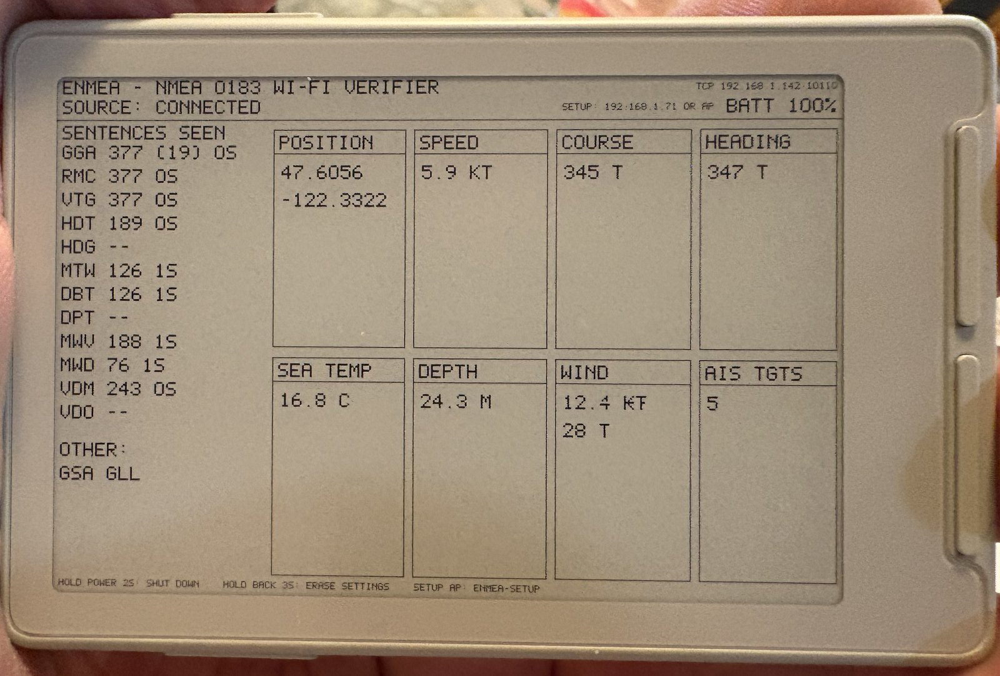

Plug the device into this computer with a USB cable and press Install. Your browser does the rest — nothing to download, nothing to set up.

USB JTAG/serial debug unit.eNMEA-Setup.http://192.168.4.1/ to enter your Wi-Fi details and where your NMEA data comes from. The user guide walks through it.| No device in the list | Try a different USB-C cable — charge-only cables carry no data. Then try another port. |
| Still nothing, on Linux | Your user needs permission to use serial ports. In a terminal: sudo usermod -aG dialout $USER, then log out and back in. |
| Install fails partway | Unplug, plug back in, and press Install again. A half-written flash is recoverable — the installer rewrites everything from scratch. |
| Screen stays blank | Hold the power button for 2 seconds to shut down, then press it once to start up again. |
| Screen shows diagonal black smears | Wrong firmware for this panel. This installer only builds for the X3 — reinstall from this page. |
Installing eNMEA is not a one-way door. CrossInk — the e-reader firmware these devices usually run — has its own one-click web installer, and it is the right way back:
inky.crossink.dev — pick your device model and press flash, exactly like this page.
Two things worth knowing before you switch either direction:
| Your books are safe | Everything on the SD card is untouched. Flashing only rewrites the chip's internal memory; eNMEA never reads or writes the card at all. |
| Settings do not survive | Installing anything resets the saved Wi-Fi and source settings, in both directions. Expect to set the device up again after a switch — a minute's work, not a problem. |
We deliberately don't host CrossInk builds here. Getting them from the project itself means you get the current, official firmware for your exact model rather than a copy that quietly falls behind.
Installed eNMEA before 2 September 2026? Earlier builds used a flash layout that CrossInk's installer rejects, with the message "Partition table is missing an OTA app slot". Install eNMEA once more from the button above — that corrects the layout — and Inky will then work normally.
The same image flashes with esptool, no browser involved:
esptool --chip esp32c3 write-flash 0x0 eNMEA-x3-<version>.bin
Grab the .bin from the firmware folder. Building from source is in the repository README.